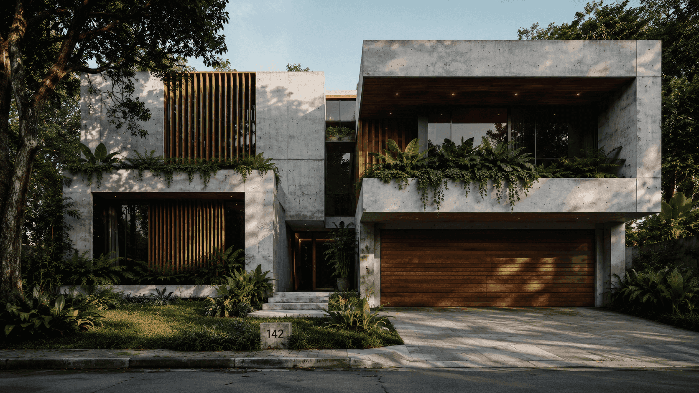
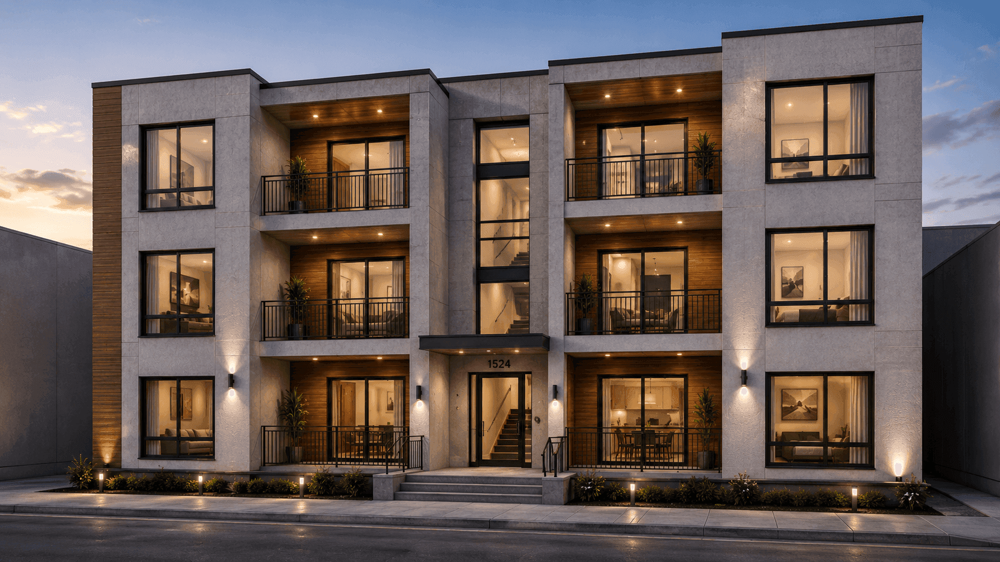

A · № 01Living
Standard living.
The structural workhorse of the system. Bedrooms, lounges, and habitable rooms — the module that repeats across every typology.
Field Note · № 01
A building, conventionally, is something that happens to a piece of land. Trucks arrive. Concrete is mixed. Walls go up by hand, in the open, in whatever weather the day delivers.
We started Precast Africa with a different premise. A home, like any other manufactured object of quality, can be designed once and produced many times. It can be made under a roof, leave the plant complete, and be set down on its site by crane in a single afternoon.

The Precast Africa system is deliberately small. Three core modules and one enhanced variant combine to produce any residential typology in our range — studio apartments through to multi-bedroom homes, single-storey terraces through to mid-rise walk-ups.
Repetition is the point. It is what makes the quality reproducible and the price hold. Up to ninety per cent of any building is complete before it ever sees its plot.
Hover any module to see the bare component beneath.
The structural workhorse of the system. Bedrooms, lounges, and habitable rooms — the module that repeats across every typology.

Bathroom, kitchen, plumbing, drainage, electrical. The complicated half of any home, centralised and finished in a single component.


Vertical circulation, stair access, and structural-core integration for multi-storey blocks. Single-flight and return-stair configurations within one card — the spine of any walk-up.

Reinforced concrete cast at forty megapascals. Connection details tuned for crane lift. Stacking, dimensional, and material schedules signed off before the first pour. A building, in our hands, begins as an engineering document.
The factory is the only place in residential construction where every weight, tolerance, and connection can be measured before it leaves for site.

The African housing shortfall is not a problem of demand, ambition, or even capital. It is a problem of delivery. Site-built construction is too slow, too imprecise, and too exposed to weather to ever close the gap.
We are headquartered in South Africa, with a manufacturing strategy that grows outward rather than upward — plant by plant, region by region. Each plant is a unit of capacity, engineered around the offtake of a partnership. The company is built the way the buildings are.

01 · Design
Layouts are translated into the modular grammar — repeatable module types, structural arrangement, and service coordination.
02 · Manufacture
Modules are cast at 40 MPa, internally finished, and quality-tagged at every station. Up to ninety per cent leaves the plant complete.
03 · Transport
Finished modules move plant-to-site on planned abnormal-load runs — timed to the installation programme, never stockpiled at the gate.
04 · Install
Modules are positioned against pre-poured foundations. Structural connections, weather sealing, and integration follow a known sequence.
05 · Integrate
Services tie-in, façade refinement, landscaping — the wet-trade exposure of a conventional site is largely removed.
06 · Hand Over
Each unit is signed off against module-level quality data, embodied-carbon figures, energy performance, and warranty terms.

The strongest argument for industrialised construction is not what it adds, but what it removes. It removes weather. It removes over-pour. It removes cement consumed for confidence rather than for strength. It removes packaging, formwork, and mixed-concrete waste.
The numbers below compare a Precast Africa programme to a like-for-like in-situ programme of equivalent floor area. They are not aspirations. They are the operational consequence of running the work indoors.
01 · Embodied Carbon
−40%
Precision batching eliminates over-pour; controlled curing reduces cement intensity for the same structural performance.
02 · Site Waste
−90%
Factory production eliminates packaging, formwork offcuts, and mixed-concrete disposal. Waste is managed centrally at the plant.
03 · Site Water
−60%
Wet trades and site curing are removed. Factory curing runs on a closed-loop system — material in regions where water is scarcest.
04 · Design Life
50+ yrs
No termite vulnerability, no cladding-replacement cycle, no recurring structural-maintenance burden across the asset's life.

Each plant is a unit of capacity, engineered around the offtake of a developer partnership, not built speculatively against a forecast. As demand grows, capacity scales with it.
Industrialised construction is sometimes presented as a technical achievement — better tolerances, faster programme, a cleaner site. All of that is true. None of it is the point.
The point is that a continent's housing can be delivered as a manufactured product, to a price, to a programme, and to a verifiable environmental and social standard. A fifty-year, low-carbon, dignified home in the hands of a family that previously could not access one is the largest social and economic intervention a building company can offer.
That is what we are building. Module by module. Plant by plant. Project by project.